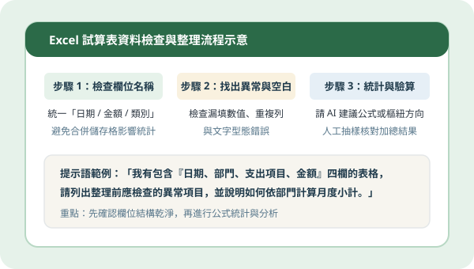
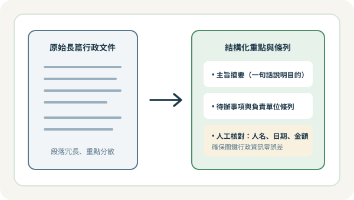
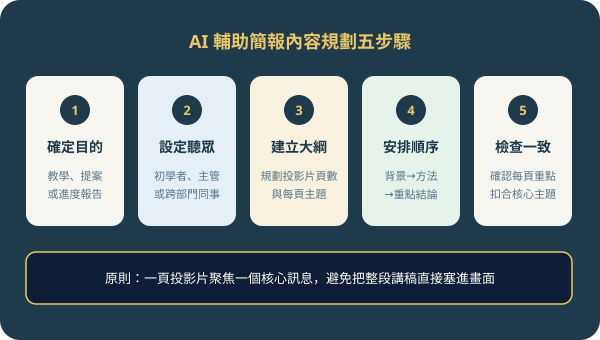

單元編號 C01・效率工作教學狀態：已發布（示範內容）｜更新：2026-10-29
C01｜AI 協助整理 Excel
日常處理 Excel 試算表時，最花時間的往往不是寫複雜公式，而是前期整理雜亂的欄位與格式。透過結構化的檢查步驟搭配 AI 輔助，能讓試算表整理更有條理。
核心操作重點
- 檢查欄位名稱與結構：先確認第一列標題是否清楚唯一（如：日期、部門、項目、金額），避免在資料區使用合併儲存格。
- 找出空白值與異常資料：整理前先篩選是否有漏填欄位、重複登錄列，或將數字誤存為文字格式的情況。
- 設計基本統計問題：向 AI 清楚描述表格有哪些欄位，再請它建議適合的函數（如 SUMIFS、COUNTIF）或樞紐分析表配置方式。
- 針對分析結果提出檢查建議：套用公式後，先以人工抽樣 3 至 5 筆資料驗算小計是否正確，確認邏輯無誤再套用至整份表格。
✦ 試算表整理提示語範例（示範內容）「我有一份行政支出試算表，欄位包含：A欄日期、B欄申請部門、C欄項目說明、D欄金額。請告訴我：1. 統計前建議先檢查哪些常見格式錯誤？ 2. 若想在另一張工作表依『申請部門』統計每月總金額，可以使用什麼公式？」

圖 C01：試算表結構檢查與 AI 輔助統計驗證流程單元編號 C02・效率工作教學狀態：已發布（示範內容）｜更新：2026-10-29
C02｜AI 協助整理行政文件
面對長篇幅的說明文件或會議紀錄時，利用 AI 協助提取主旨與分類條列，可以幫助團隊快速掌握重點並減少閱讀負擔。
核心操作重點
- 整理文件核心重點：先請 AI 用一至兩句話總結文件的核心目的與適用對象。
- 將長篇文字轉換成摘要：把多段落敘述濃縮為結構清晰的重點摘要，保留關鍵背景與結論。
- 建立分類與待辦條列：依「決議事項」、「待辦行動」、「負責單位」與「預計時程」分項條列，方便後續追蹤。
- 嚴格檢查名稱、日期與數字：摘要完成後，務必逐一對照原文中的人名、單位名稱、日期時間與金額數字，避免在濃縮過程中發生遺漏或誤植。
✦ 行政文件整理提示語範例（示範內容）「請將以下活動籌備會議紀錄整理成三個部分：1. 會議主旨（50字內）；2. 重要決議事項（條列式）；3. 後續待辦清單（標註負責組別與截止日期）。請完全依照原文資訊整理，不可自行更改任何日期與數字。」

圖 C02：長篇行政文件轉化為結構化條列與人工核對重點單元編號 C03・效率工作教學狀態：已發布（示範內容）｜更新：2026-10-29
C03｜AI 輔助簡報內容規劃
製作簡報時若直接打開軟體排版，容易陷入版面細節而忽略整體邏輯。先使用 AI 協助梳理簡報目的、聽眾背景與各頁大綱，能讓簡報架構更加明確。
核心操作重點
- 確定簡報目的：先釐清這份簡報是要「教學說明」、「專案提案」還是「成果回報」，確立核心傳達目標。
- 確定聽眾背景：思考聽眾是初學者、部門同事或決策主管，調整內容的深淺度與用詞方式。
- 建立簡報大綱：請 AI 依主題規劃 6 至 8 頁投影片架構，明確列出每一頁的標題與 3 個核心要點。
- 安排資訊順序：採用「背景與問題 → 解決方法與步驟 → 實際案例或注意事項 → 總結與下一步」的清晰脈絡。
- 檢查內容是否與主題一致：逐頁檢視是否維持「一頁一重點」原則，刪除偏離主題或過於冗長的文字段落。
✦ 簡報大綱規劃提示語範例（示範內容）「我要準備一份 15 分鐘的內部學習分享簡報，主題是『初學者的 AI 文書整理入門』，聽眾是一般行政人員。請幫我規劃 6 頁投影片大綱，包含每頁標題與 3 點精簡內文，並確保內容由淺入深、前後呼應。」

圖 C03：簡報內容規劃五步驟（目的 → 聽眾 → 大綱 → 順序 → 一致性檢查）